今年も対面の卒業式となり、コロナ禍の影響はほとんどなくなりました。桜にはまだ早かったのですが、皆元気に巣立っていきました。昨年度に続き加藤君が電気学会学術奨励賞を受賞しました。
今年は久しぶりに見学会も復活できました。３年生４年生有志と川崎での見学会の後、横浜中華街での懇親会もできました 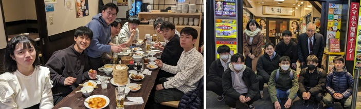
合同卒研中間発表会を、今年は久しぶりに対面で開催できました。まだ懇親会はお酒無しですが無事に行うことができました。学生も初めての学外発表の経験をすることができました。 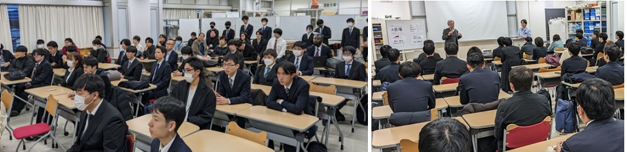 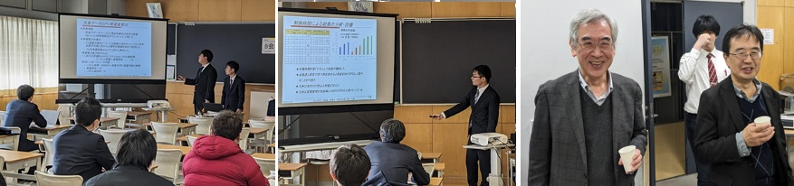

今年は全学（２部制）の卒業式なりました。午前は晴天にもめぐまれ桜も満開でした。川島君が電気学会学術奨励賞を受賞しました。
卒業生から立派なお花も頂きました。
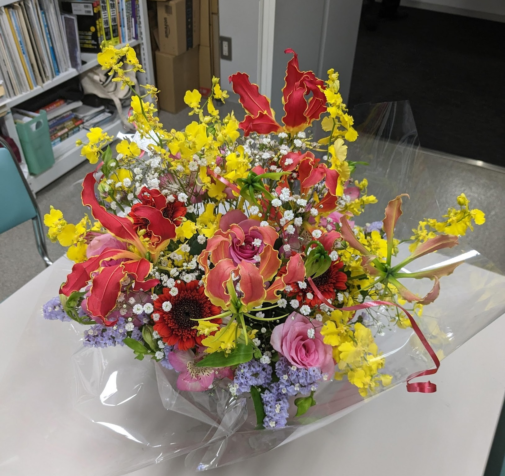
今年の電気学会全国大会は対面が復活し名古屋大学で行われました。４年川島君が論文発表ました。おひつまぶしも食べて、名古屋城にもちょっとだけ寄ってきました。
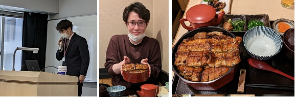 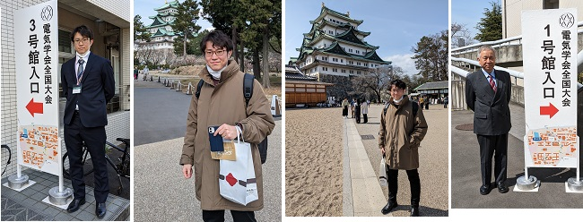
恒例の合同卒研中間発表会ですが、今年は対面参加も増え本学での開催でした。まだ懇親会は無しですが、学生も張り切っての参加で活気が出てきました。 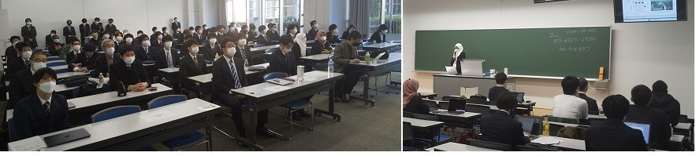 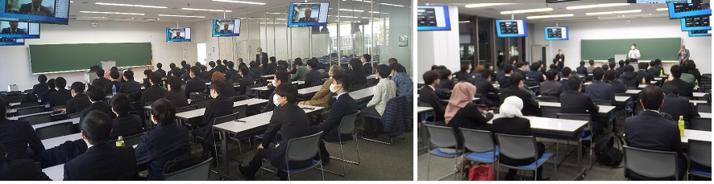 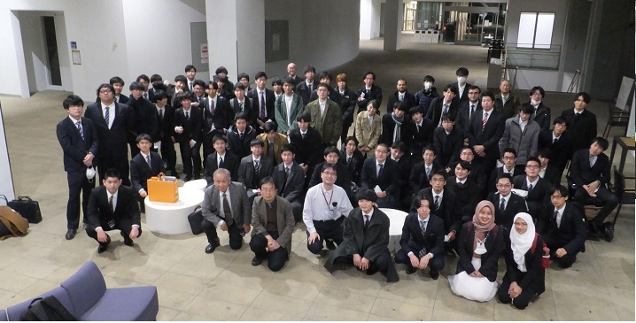
電気学会の部門大会が久しぶりに対面で開催されました。4年生の川島君はFIP 制度下での PV 発電所併設蓄電池の充放電制御の論文を発表しました。その後学会の設備見学会に参加し風力発電所と永平寺の見学会にも参加しました。

今年もコロナ禍の影響で学系単位の卒業と式なりました。晴天にめぐまれよかったです。櫻井君が電気電子工学系の総代として学位記を授与されました。
明星大での卒研発表会です。今年は対面での開催が再開できました。 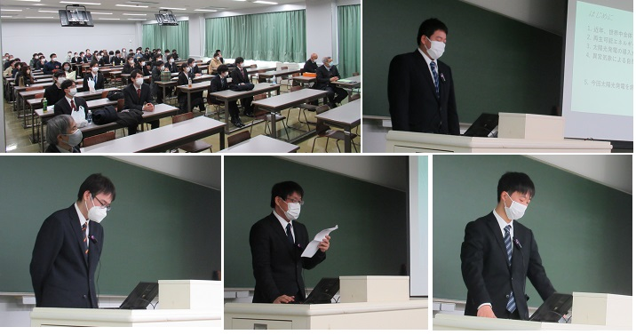 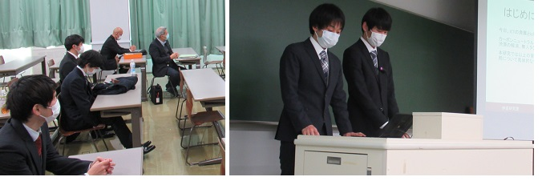
恒例の合同卒研中間発表会ですが、今年は工学院大学でハイブリッドでの開催となりました。やっと例年どおり会場にあつまることが可能になりました。やはり対面のほうが楽しいです。でもまだ懇親会は無しでした。

今年はコロナ禍の影響で学系単位で飲食なしの卒業と式なりました。とはいえ晴天にめぐまれ、キャンパスの桜が七分咲くらいとなり、晴れやかな気持ちのいい、写真たくさんが撮れました。素直で誠実な卒業生に幸あれ！ 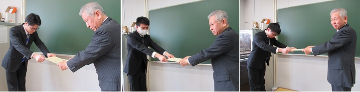 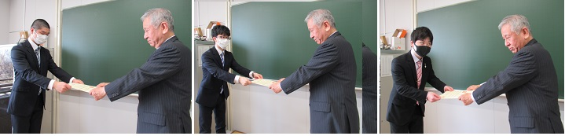 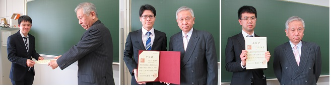 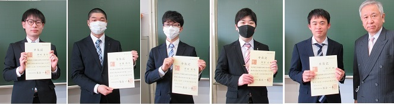 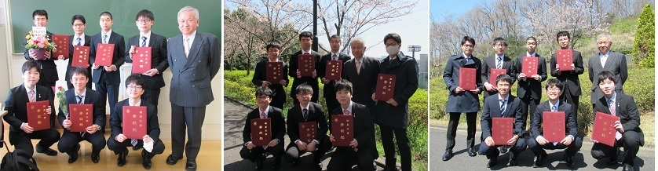 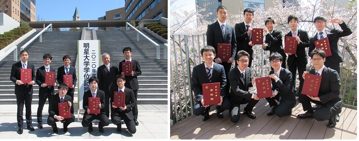 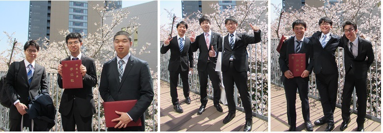 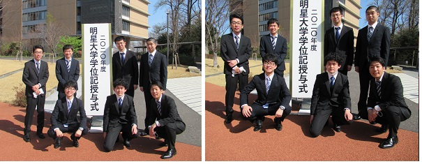
恒例の合同卒研中間発表会ですが、今年はリモートでの開催となりました。例年であれば会場に皆が集い楽しい交流の場になるのですが、各校各自がPCに向かっての遠隔参加でした。 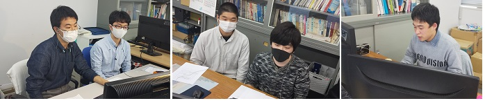
今年はコロナウイルス感染拡大防止の観点から卒業式は縮小されました！なので例年より寂しい卒業式になりました。
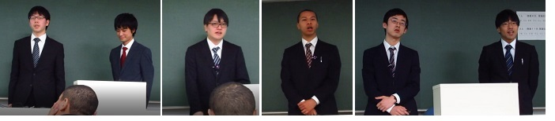 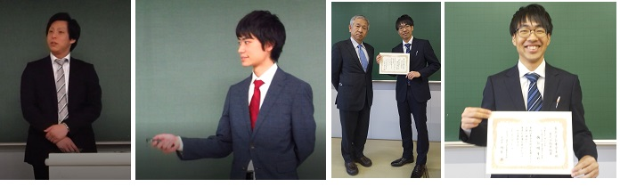
卒業旅行を兼ねて３年生も一緒に白馬コルチナスキー場でスキー合宿をしました。
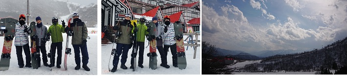 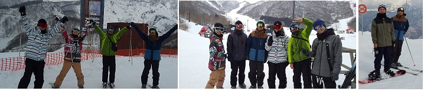
恒例の合同卒研中間発表会。今年はサレジオ高専での開催となりました。芝浦工大、工学院大、東海大、日本工大、サレジオ高専の学生が集い、研究成果の途中結果を発表しました。４年が発表を行い３年生も聴講しました。懇親会も楽しく交流できました。 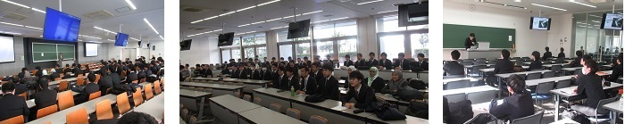 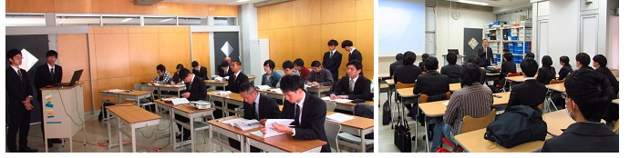 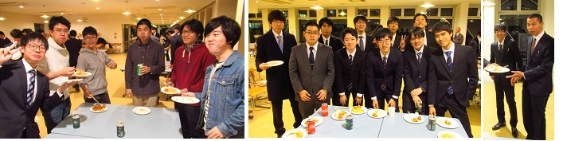
３年生が研究室に配属となり、歓迎会をしました。場所は聖蹟桜ヶ丘駅ビルのBBQです。

ゼミ合宿をしました。場所は近場の八王子セミナーハウスです。写真が少ないのは電験受験特訓ゼミであったので、食事の時間の写真とチェックアウトの写真しかないのです。厳しい特訓の成果で梅谷君は電験３種に合格しました。
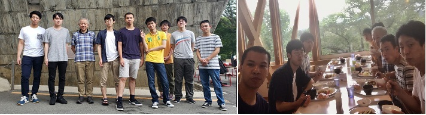
今年は学部５名が社会に巣立ちました。おめでとう！
今年の電気学会全国大会は北海道札幌で行われました。４年城山君が論文発表し３年生も参加しました。北大にも寄ってきました。
八王子市では毎年、大学コンソーシアムの活動として学生発表会を開催しています。今年の伊庭研には意欲的な学生が多く、是非この場で研究成果を報告したいと申し出があり、発表会に参加しました。緊張感がある学外の発表会ですが、みな熱心に発表に臨みました。明星大の電気学系からは他にも４研究室からも発表がありました。
恒例の合同卒研中間発表会。今年は本学明星大での開催となりました。芝浦工大、工学院大、日本工大、サレジオ高専の学生をお迎えして、互いに研究成果の途中結果を発表しました。４年の城山智吉君、芳賀将吾君、大塚貴博君が発表を行い、３年生も加わって楽しい会となりました。
岩手出身の大坪君に本当の富士山を見せようということになり、富士山の眺望で有名な三つ峠のハイキングに行きました。明星大に招聘中の韓国高麗大学の李炳峻教授も同行されました。楽しい秋山ハイキングの後は温泉で汗を流しました。
産業技術総合研究所福島再生可能エネルギー研究所（FREA)と常磐共同火力(株) 勿来発電所の見学をしてきました。FREAは国内最大の再生可能エネルギーの研究機関であり先端の設備を備えています。常磐共同火力勿来発電所はIGCC（石炭ガス化コンバインドサイクル発電）という世界に誇る発電方式をしている発電所です。この２つの施設をスパリゾートハワイアンズに宿泊して見学してきました。
明星大学では小学校低学年の子供たちに、科学の楽しさ、面白さを体験してもらう「夏休み科学体験教室」を毎年開催しています。伊庭研究室では今年も手回し発電機と蓄電器を使った模型自動車の工作実験をしました。恒例となったこの教室では学系の１年生がクイズを出題したり工作のお手伝いをします。
中央フリーウェイ。右に見える競馬場、左はビール工場･･･って若い人は知らないだろうけど、そのビール工場を見学しました。そのあとは鳥貴族でさらに乾杯！。
今年は学部３名、修士１名が巣立ちました。おめでとう！みんな頑張れ。
タイ国におけるシンポジウム（2018 IEEJ PES. IEE PES Thailand Joint SymposiumとiEECON2018）に参加し論文を発表しました。電気学会が支援する国際学会で今年はタイ南部のKrabiで行われました。
恒例の合同卒研中間発表会。今年は工学院大で他大学の学生との交流しました。発表した高橋由佳さん、伊達昇吾君、長利海杜君、これに見学の２、３年生も加わって刺激のある会となりました。
今年もOB会が開催され、なつかしいOB連中が多忙にもかかわらず顔を出してくれました。現役学生もOBの話を聞けることを楽しみにしています。
研究会で修士2年の原口君が研究発表をしました。この研究発表はのちに電気学会系統技術部会の奨励賞に選出されました。自由時間には網走にも足を運びました。
ICEEは毎年参加している国際大会ですが、今年は中国威海 Weihaiで開催されました。原口君も英語の口頭発表を落ち着いてすることができました。福井大や芝浦工大の皆さんとも交流できました。
毎年の卒業式ですが、卒業生の社会で元気にやっていけるか少し不安な時もあります。これから社会の厳しさに負けずがんばってください。
今年の電気学会全国大会は富山で行われました。4年恒藤君とM1原口君が論文発表しました。白海老、ホタルイカ、のどぐろ、などなど、それはもうGOODでした。
恒例の合同卒研中間発表会。今年は芝浦工大で他大学の学生との交流しました。がんばった小林祐太君、恒藤佑輔君、見学の３年生も加わって「月島もんじゃ焼き」で盛り上がりました。
小倉は2013.9.11の研究会で来ましたが、今回は早稲田の中西研のメンバーと合流して「食堂パンチ松吾郎」で大騒ぎ。まつごろうは「無法松の一生」に由来するのかもしれません。原口君は蓄電池の多目的利用の論文を発表しましたが、会場での写真撮影が禁止となったので飲み食い中心の写真となりました。
ICEEは毎年参加している国際大会ですが、今年は沖縄で開催されました。原口君も英語の口頭発表を落ち着いてすることができました。バンケットでの交流や沖縄の海を楽しむ時間も少しは持てました。
卒業後もOB会が開催され、なつかしい連中が顔を出してくれます。社会人として元気で活躍している姿を見せてもらうのは楽しみでも有ります。
毎年の卒業式ですが、いつも学生の４年間の成長には驚かされます。高橋君が総代で学位記を学長から手渡され、原口君は電気学会の学術奨励賞を受賞しました。おめでとう。これから社会や大学院で大きく羽ばたいてください。でもなんで皆背が高いんだろう。

タイ国におけるシンポジウム（2016 IEEJ PES. IEE PES Thailand Joint Symposium）に参加し論文を２件発表してきました。電気学会でも産業界を支援する国際交流を活発にしています。微笑みの国タイは、食事もおいしく素敵な国でした。

近場の温泉に行こうということで、箱根の卒業旅行に行きました。何をするということもなく、ワイワイと楽しんできました。
恒例の合同卒研中間発表会。他大学の学生との交流ができる楽しい機会です。発表する４年生には緊張の１日となりました。
電気設備学会の全国大会に参加して、再生可能エネルギーにかかわる設備面からの研究課題を学んできました。秋の北海道ではジンギスカンや海の幸も堪能しました。４年原口君は学会初参加でした。
研究室への配属は3年後期からで、3,4年生が同時に研究室に集うことができます。配属決定後に顔合わせを兼ねて昭和記念公園でBBQをしました。先輩には色々聞いて教わりたいことがたくさんあります。
ICEE(International Conference on Electrical Engineering)は日韓中香港が中心となる電力関連の国際学会です。研究室では国際的なレベルの研究を目指し、英語での論文作成と口頭発表を励行しています。学会での発表経験だけでなく、他大学の研究者との交流もあり、大学院生の山口君には2年連続しての論文発表経験になりました。
電気電子工学系には現在7名の女子学生が在籍しています。新学期にあたり、新入女子学生と先輩女子学生の私的交流会が研究室でありました。情報交換も大切です。
電気学会全国大会が東京都市大学で開催されました。卒業式後になりましたが、４年制が２件論文を発表しました。その後３年生による追い出しコンパで盛り上がりました。
宮古島市島嶼型スマートコミュニティ実証事業のシンポジウムと電気学会の研究会が宮古島で開催されました。学生も参加して論文を発表し、スマートグリッド実証を現地で見学しました。学生たちは余暇に南国の海も楽しみました。
東京電力殿の施設を見学する機会を得て、川崎の施設を見学しました。その後横浜中華街に出て円卓を囲んでのパーティをしました。やはり多くの実物を見て見聞を広めることは重要です。
電力工学を専門とする各大学・高専の教員とその仲間で、毎年恒例になった卒研中間発表会を明星大学にて行いました｡今年は芝浦工大：藤田，工学院：荒井，東京工科大：余，東海大学：石丸，日本工大：竹本、サレジオ高専：米盛、山下，明星大学：石田、と多くの教員の参加を得て、その卒研生・有志学生らによる、25件の論文発表があり、49名の参加者がありました。電気学会の学生支部より活動費の補助も頂きました。
研究会で修士1年の山口君が研究発表をしました。研究に参加した4年生の山本君、田中君も学会参加しました。自由時間にはあべのハルカスにも足を運び、他大学の学生さんとも交流できました。
電気学会東京支部ではこれまでの連合研究会に代えて 東京支部カンファレンス を開催し、経験の浅い学生のための研究発表会を企画しました。伊庭研究室ではこの機会に4年生にも研究発表をさせました。懇親会では三菱電機のマルタさんや、電気学会会長、関西電力生駒副社長とも懇談できました。
福島県郡山に新しくできた産総研福島再生可能エネルギー研究所は再生可能エネルギーに関する新技術を生み発信する拠点として注目されています。研究室では早速電力貯蔵技術研究会研究室の主催する講演会・見学会に参加して、新しい研究所を見学してきました。
ICEE(International Conference on Electrical Engineering)は日韓中香港が中心となる電力関連の国際学会です。研究室では国際的なレベルの研究を目指し、英語での論文作成と口頭発表を励行しています。学会での発表経験だけでなく、他大学の研究者との交流もあり、大学院生の山口君には良い経験になったようです。
電気学会で4年生が論文発表しました。テーマは需要家の需要予測と風力発電のならし効果に ついての２編です。発表後は温泉と地元の料理を楽しみました。
小学生を対象とした講習会を秋葉原UDXで行いました。電気エネルギーのお話を易しくしたあとで、研究室の学生がお兄さんとしてお手伝いしながら、楽しく工作をしました。
工学院大学で各大学・高専の電力系統工学をご専門の先生有志とその卒研生・有志学生を対象に、恒例の卒研中間発表会を行いました｡電気学会の学生支部より活動費の補助も頂きました。
研究成果を研究会で発表しました。大学院生以上の専門家が論文発表することが多い研究会ですが、少し背伸びをして４年生が発表しました。研究会主催の三井倶楽部見学会にも参加しました。もちろん烏賊の生き造り、関あじ、ごま鯖なども味わいました！
明星大学では小・中学生たちに、科学の楽しさ、面白さを体験してもらう「夏休み科学体験教室」を毎年開催しています。伊庭研究室では手回し発電機と蓄電器を使った模型自動車の工作実験をしました。恒例となったこの教室では学系の１年生が中心となって解説をします。

「夏休み科学体験教室」は多摩地域を中心に集まった小・中学生たちに、科学の楽しさ、面白さを体験してもらう地域活動です。伊庭研究室では手回し発電機と蓄電器を使った模型自動車の工作実験をしました。スタッフは学系の１年生で、彼らが中心となって解説をしてくれました。
サレジオ高専で各大学・高専の電力系統工学をご専門の先生有志（芝浦工大：藤田，工学院：荒井，サレジオ高専：竹本）とその卒研生・有志学生を対象に、毎年恒例になった卒研中間発表会を行いました｡電気学会の学生支部より活動費の補助も頂きました。
地元中核都市のひとつである府中市のテクノフェアに出展しました。太陽光パネルの設置と影による出力低下の研究を説明しました。
卒研発表会と修論の発表会が終わると学生はちょっと一息できます。スキー合宿も３回目で、今回は夜行です。天気予報に反して晴天となり、へとへとになるまで楽しみました。
明星大学日野キャンパスで各大学・高専の電力系統工学をご専門の先生有志（法政：白井，芝浦工大：藤田，工学院：荒井，サレジオ高専：竹本）とその卒研生・有志学生を対象に、卒研中間発表会を行いました。他流試合とあって学生の緊張感も高まり、ダレ気味の卒研に活を入れる良い機会になっています。この活動は当初、法政・芝浦の師弟交流から始まったと聞いていますが、工学院と明星があとから参加して、持ち回りも恒例になりつつあります。電気学会の学生支部より活動費の補助も頂きました。
国際学会への参加は学生の技術者としての能力を飛躍的に高めます。研究のレベルを高め、慣れぬ英語で論文を作成し口頭発表することで自信もつくようです。大学院生の清水川君は２回目の海外発表で、韓国釜山では市内観光やグルメも楽しみました。
再生可能エネルギーの導入が急がれています。稚内には大規模太陽光発電所（メガソーラ）があり、また大規模な風力発電所も稼働中です。この地域を見学する機会を得ましたので、喜んで参加しました。やはり「百聞は一見に如かず」大変勉強になりました。
星友祭では研究室でカレーうどんを出店しました。うどんは手打ちうどんにこだわり、大好評でした。
電気学会電力技術・電力系統技術合同研究会（早稲田大） 2009.8.15-17
国内での学会活動は電気学会を中心にしています。今年は部門大会と研究会が東京都内で開催され、少し残念ですが、４年生も参加しやすいなどのメリットがあります。
小中学校には「社会科見学」がありました。大学生に対しても積極的に見学の機会を作らないと教科書の世界だけに閉じこもりがちになり、実践の学問である工学の魅力が半減します。バスを仕立てての見学会では東京電力（株）と電源開発（株）の協力を得て地下変電所（新豊洲）、火力発電所（品川）、風力発電所（電源開発）を見て回りました。（所内は撮影禁止なので写真が少なくて残念）
研究活動の大きな魅力は国際学会への参加です。国際的なレベルの研究をすること、英語で論文を作成すること、英語で口頭発表すること、旅費の工面･･･、これらは学生も教員も大変な苦労をします。しかし、この経験は学生の大きな成長と次の研究への大きな動機付けになります。もちろんバンケットや市内見学、観光やグルメも楽しみです。瀋陽大学は留学生の蔡さんの母校なので、楽しい交流もありました。
新学期が始まって新しい卒業研究生が行う最初の活動が、「宿泊合宿」です。まずはチーム作りから。キャンプ合宿ではカレーライスをつくり、昼ごはんは手作りおにぎりで･･･三つ峠登山もします。天気も良くて気持ちよかったです。では乾杯!!
{kind=link}
電気学会全国大会は、全国の電気電子工学の研究者が集う大きな学会です。大学院の学生だけでなく、学部学生にも論文発表の機会があります。学生が学外の専門家の前で研究発表するのは学内の発表より数倍も緊張するようです。発表が終われば地元の美味しいものを食べるのが楽しみ。札幌ではジンギスカン、小樽の寿司、毛がに、札幌ラーメンを楽しみました。学生の旅費は負担にならぬよう伊庭研究室では補助を出すようにしています。
北海道と本州間の津軽海峡を海底ケーブルで結ぶ直流送電設備は、全国大の電力系統の安定運用に欠かせない重要な設備です。これを大学院生と見学してきました。お世話になったのはJ-Power 電源開発株式会社の色川所長。彼とは大学のクラスメイトです。
さらに下北半島の六ヶ所村の国家石油備蓄基地、世界初のNAS電池併設型風力発電所である二又風力発電所、原子燃料サイクル各施設を説明する六ヶ所原燃PRセンターを見学してきました。

電気学会全国大会は、全国の電気電子工学の研究者が集う大きな学会です。大学院の学生はもとより、学部学生にも論文発表の機会があります。学生が初めて発表するときは「耳たぶがとけて落ちるくらい」赤い顔をして緊張していますが、大切な経験です。発表が終われば地元の美味しいものを食べるのが楽しみ。博多ではもつなべ、白魚の踊り喰い、呼子の烏賊、博多ラーメンを楽しみました。学生の旅費は負担にならぬよう伊庭研究室では補助を出すようにしています。
大学４年は卒業研究のため研究室に配属されます。１年間楽しい研究生活ができるように高尾の近くで合宿を行いました。グループに分かれて、作図・木工工作・論理ゲームなどを行いました。木工工作は重さと大きさの異なるボールを弁別して仕分ける装置を製作しました。まずは実践力、手を動かしながら考えます。終わったら屋外でのバーベキューとなります。
ICEEは、中国、韓国、日本、香港の国と地域からなる電力関係の国際学会です。昨年は香港で行い本学の大学院生が論文発表をしました。2008年は沖縄での開催です。英語での発表は学生にとっては緊張するものですが、国際的で世界に貢献する電気技術者になるためには不可欠な経験です。教員が何回も発表練習を見て指導しますので、案ずるより生むがやすし･･･となります。学生の参加費と旅費は海外であっても研究費などから補助を出しています。発表が終われば学生は外国の学生と交流したり公設市場に繰り出したり、沖縄の海や音楽を楽しんだりしたようです。
「総合科学実習」は、多摩地域を中心とする地域との関わりのある体験学習を通して、科学技術の知識と実践対応力を身につける、理工学部の共通科目です。伊庭の担当するのは「東京電力の設備見学」を中心としたもので、大学で学ぶ技術が実際に応用されている現場を見学します。科目履修生は2,3名ですが貸し切りバスを仕立てての見学会となるので、有志学生も募って毎年20〜25名程度の参加者があります。学生には「先生のほうが楽しんでいるみたい」とよく言われますが、東京電力の制御中枢機能を持つ基幹給電指令所の制御盤を目の前で見たり、世界最高落差の葛野川揚水発電所の起動停止に立ち会ったり、日本最高電圧仕様のUHV送電線を見たり、国内初の長距離送電（大月-早稲田）の行われた駒橋発電所（まだ現役で稼動している）を見れるのですから...、つい興奮してしまいます。写真には昨年度以前のものも含まれています。
「総合科学実習」では博物館見学もしています。川崎の東京電力の研究所に併設された「電気の史料館」は大学生以上に適した博物館で、専門性の高い展示物が多く、リピーターになる学生もいます。見学後は有志で横浜中華街に繰り出し中華料理「食べ放題」を楽しみます。
研究室というと大きな機械が並ぶ工場のようなイメージを持つ人が多いですが、最近の電気電子工学分野では専門分野にもよりますが、パソコンが並ぶオフィスのような静かで清潔な研究室が多くなりました。ここで4年生と大学院生が長い時間在室し研究を続けます。３年後期からの研究室への（仮）配属も始まり、多学年が集って縦の交流も盛んになりました。研究室は学生が主役ですから「勉強しているか否かは別にして」学生が集い活気があることが一番大切です。学生の中には研究室で飯を炊き、なべを作って半自炊を楽しむものもいます。
研究室裏備品：IHクッキングヒーター，ホットプレート，たこ焼き器，炊飯器，電動ポット，大鍋
卒業研究の発表会と修士論文の発表会が終わると、ほっと一息。学生は研究室の仲間といっしょに冬のゲレンデへ。「先生は勉強だけでなくスノボーも教えるのですか？」と質問されてしまいました。「私が学生の頃はそんなサーフボードみたいな板はゲレンデになかったのです。クリスチャニアでおおシーハイル（意味不明）」･･･。とにかく学生時代は遊びも大事。時には「書を捨て街に出よう」。そして「朝焼けの丘を越え青年は荒野をめざす」
2007年には初めて大学院生を海外の論文発表に引率しました。英語が不得意な学生が多いですが、自らが行った研究を海外で発表する嬉しさは格別です。発表前はひどく緊張しているのですが、終わればほっとして顔つきも変わります。海外の学会は多くがバンケット(宴席)が用意されているのも楽しみです。この経験が彼らを少しは国際的に成長させ、大きな自信につながればよいと思っています。中華料理はもちろん･･･おいしかったです。